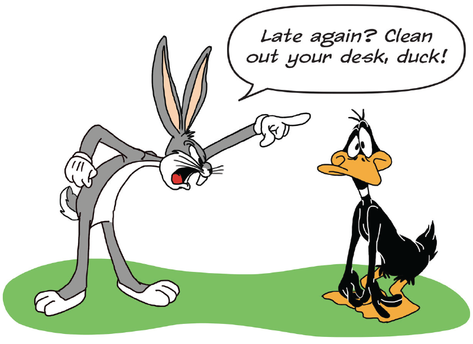
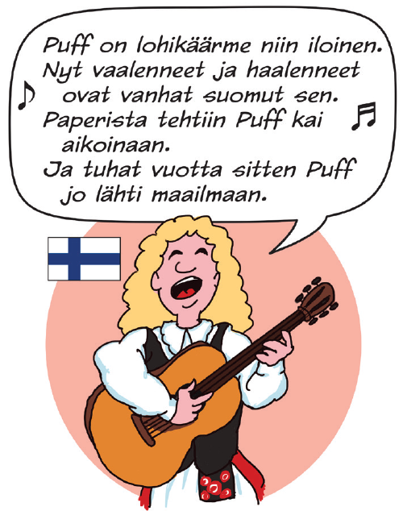
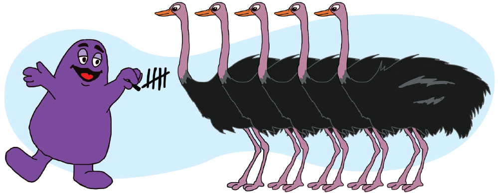
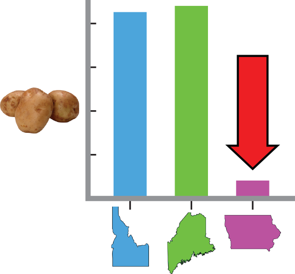
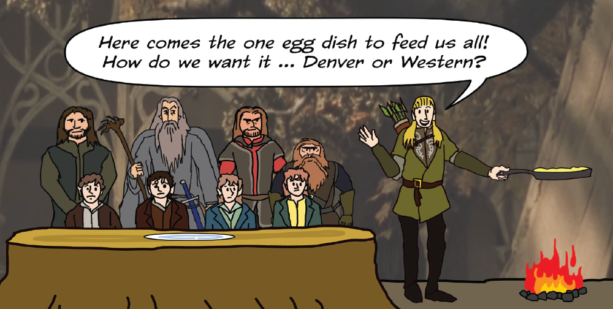
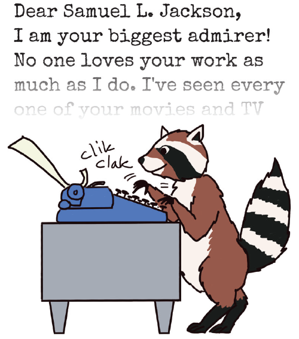
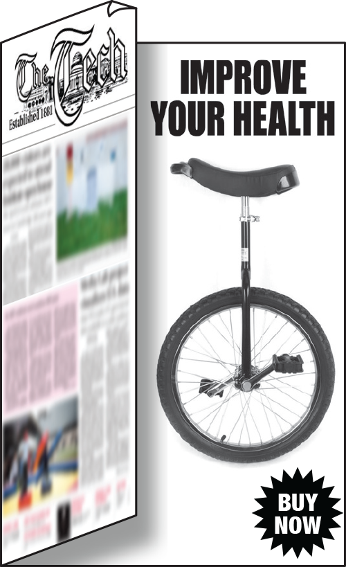
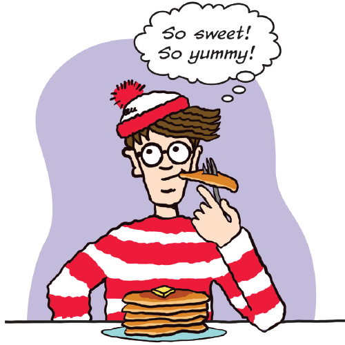

Cousin Ursula: I don't think it's that important.
Kevin: Hmmm, that's unusual.
Crystal: Shoo.
Uncle Chuck: Perhaps that book has something.
Crystal: MIT's not quite what I thought.
Uncle Kevin: Well that's a mess.
King Chuck: That’s frustrating.
Ursula: Heh.
       